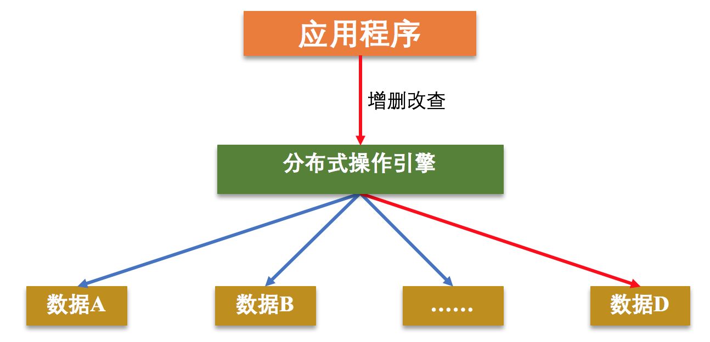
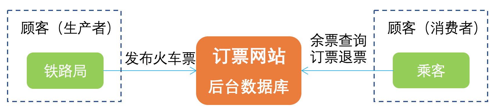
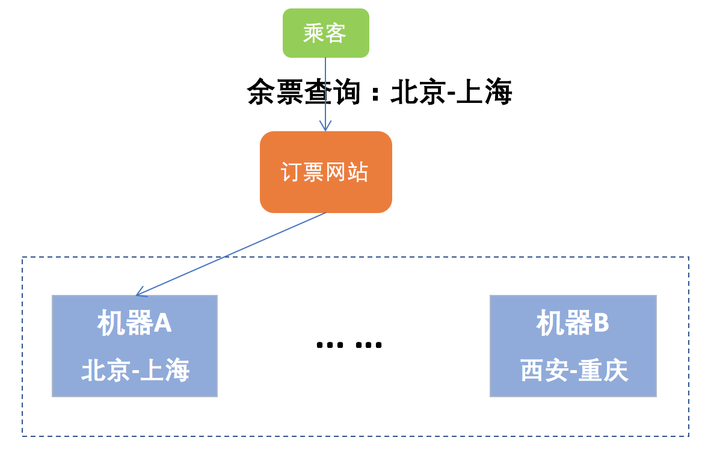
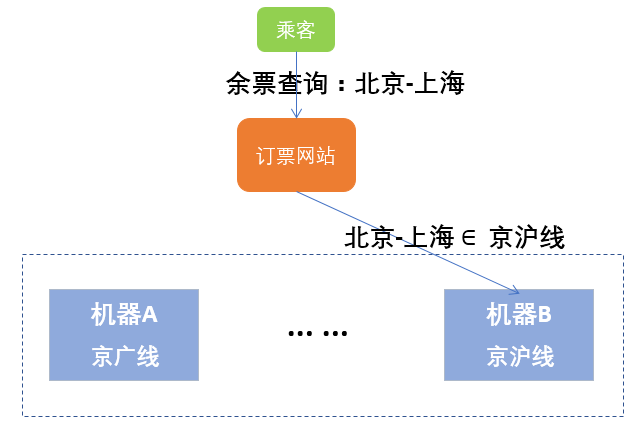
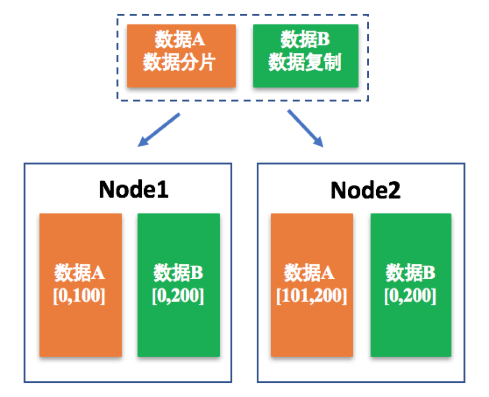
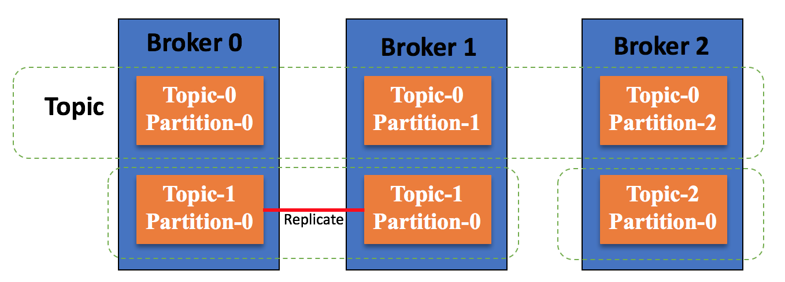
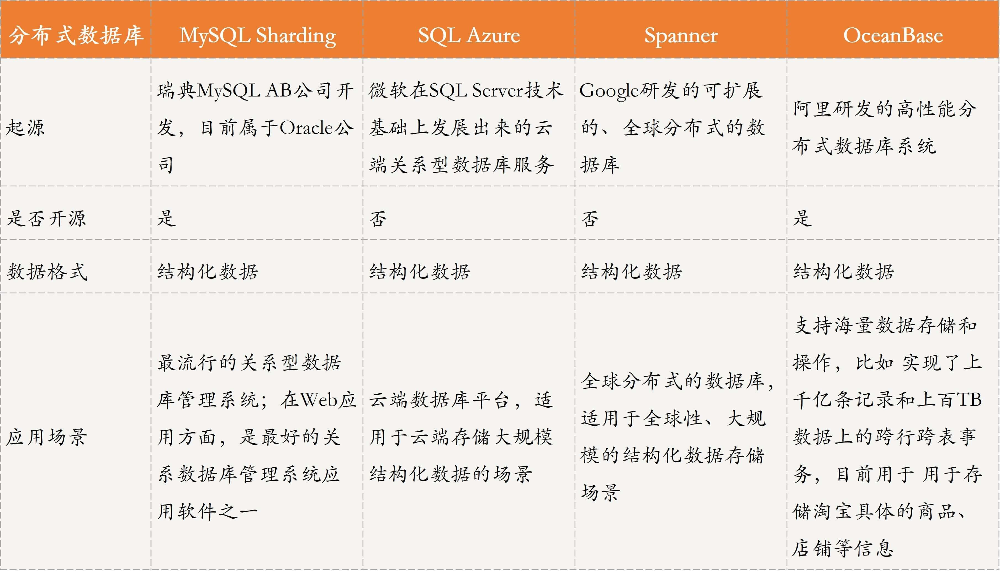
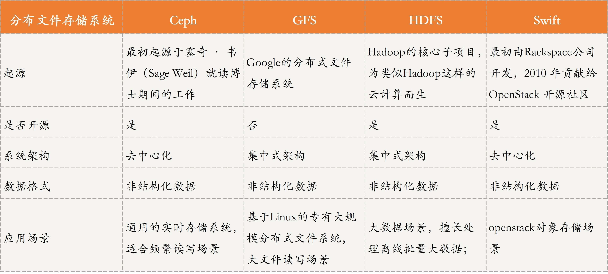
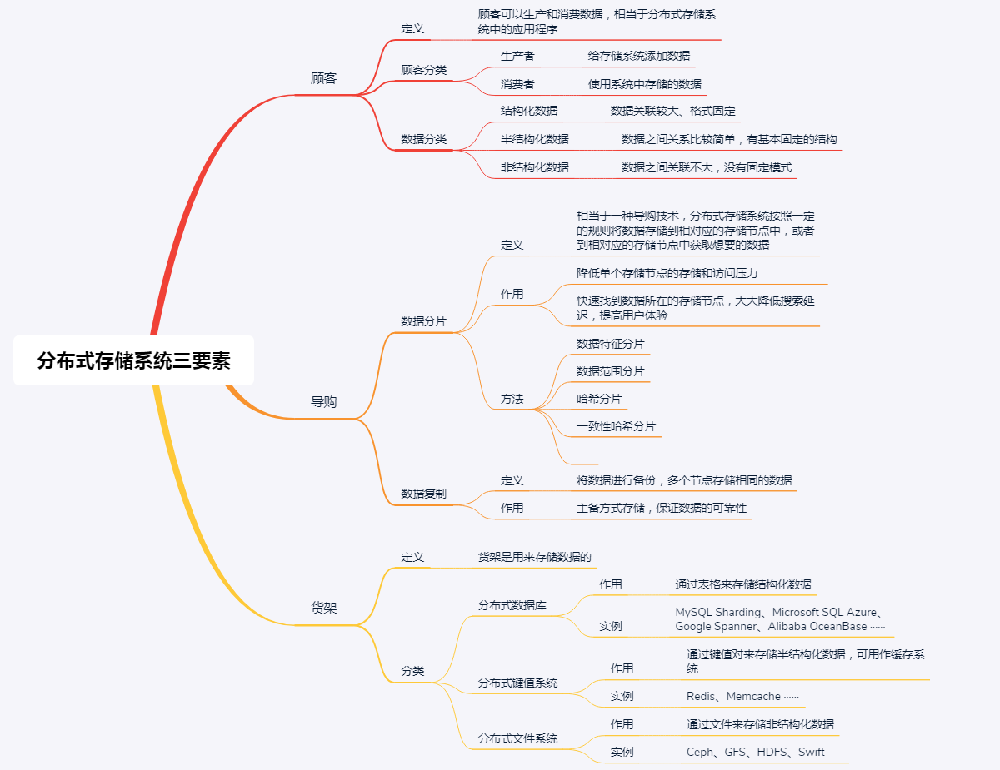

- 00 开篇词 四纵四横，带你透彻理解分布式技术.md
- 01 分布式缘何而起：从单兵，到游击队，到集团军.md
- 02 分布式系统的指标：啥是分布式的三围.md
- 03 分布式互斥：有你没我，有我没你.md
- 04 分布式选举：国不可一日无君.md
- 05 分布式共识：存异求同.md
- 06 分布式事务：All or nothing.md
- 07 分布式锁：关键重地，非请勿入.md
- 08 分布式技术是如何引爆人工智能的？.md
- 09 分布式体系结构之集中式结构：一人在上，万人在下.md
- 10 分布式体系结构之非集中式结构：众生平等.md
- 11 分布式调度架构之单体调度：物质文明、精神文明一手抓.md
- 12 分布式调度架构之两层调度：物质文明、精神文明两手抓.md
- 13 分布式调度架构之共享状态调度：物质文明、精神文明多手协商抓.md
- 14 答疑篇：分布式事务与分布式锁相关问题.md
- 15 分布式计算模式之MR：一门同流合污的艺术.md
- 16 分布式计算模式之Stream：一门背锅的艺术.md
- 17 分布式计算模式之Actor：一门甩锅的艺术.md
- 18 分布式计算模式之流水线：你方唱罢我登场.md
- 19 分布式通信之远程调用：我是你的千里眼.md
- 20 分布式通信之发布订阅：送货上门.md
- 21 分布式通信之消息队列：货物自取.md
- 22 答疑篇：分布式体系架构与分布式计算相关问题.md
- 23 CAP理论：这顶帽子我不想要.md
- 24 分布式数据存储系统之三要素：顾客、导购与货架.md
- 25 数据分布方式之哈希与一致性哈希：“掐指一算”与“掐指两算”的事.md
- 26 分布式数据复制技术：分身有术.md
- 27 分布式数据之缓存技术：“身手钥钱”随身带.md
- 28 分布式高可靠之负载均衡：不患寡，而患不均.md
- 29 分布式高可靠之流量控制：大禹治水，在疏不在堵.md
- 30 分布式高可用之故障隔离：当断不断，反受其乱.md
- 31 分布式高可用之故障恢复：知错能改，善莫大焉.md
- 32 答疑篇：如何判断并解决网络分区问题？.md
- 33 知识串联：以购买火车票的流程串联分布式核心技术.md
- 34 搭建一个分布式实验环境：纸上得来终觉浅，绝知此事要躬行.md
- 特别放送 Jackey：寄语天涯客，轻寒底用愁.md
- 特别放送 分布式下的一致性杂谈.md
- 特别放送 崔新：追根溯源，拨开云雾见青天.md
- 特别放送 徐志强：学习这件事儿，不到长城非好汉.md
- 特别放送 那些你不能错过的分布式系统论文.md
- 结束语 为什么说提升职业竞争力要从尊重、诚实开始？.md
24 分布式数据存储系统之三要素：顾客、导购与货架
你好，我是聂鹏程。今天，我来继续带你打卡分布式核心技术。
在上一篇文章中，我们一起学习了CAP理论。该理论指出，在分布式系统中，不能同时满足一致性、可用性和分区容错性，指导了分布式数据存储系统的设计。
随着数据量和访问量的增加，单机性能已经不能满足用户需求，分布式集群存储成为一种常用方式。把数据分布在多台存储节点上，可以为大规模应用提供大容量、高性能、高可用、高扩展的存储服务。而，分布式存储系统就是其具体实现。
在今天这篇文章，我将带你学习分布式存储系统的关键三要素，让你对分布式数据存储系统有一个直观的理解。在后面几篇文章中，我会针对这三要素中的关键技术进一步展开，以帮助你更深入地理解分布式数据存储系统。
接下来，我们就一起打卡分布式存储系统的三要素：顾客、导购与货架。
什么是分布式数据存储系统？
分布式存储系统的核心逻辑，就是将用户需要存储的数据根据某种规则存储到不同的机器上，当用户想要获取指定数据时，再按照规则到存储数据的机器里获取。
如下图所示，当用户（即应用程序）想要访问数据D，分布式操作引擎通过一些映射方式，比如Hash、一致性Hash、数据范围分类等，将用户引导至数据D所属的存储节点获取数据。

静下心来想一下，获取数据的整个过程与你到商店购物的过程是不是有些类似呢？
顾客到商店购物时，导购会根据顾客想要购买的商品引导顾客到相应的货架，然后顾客从这个货架上获取要购买的商品，完成购物。这里的顾客就是图中的应用程序，导购就相当于分布式操作引擎，它会按照一定的规则找到相应的货架，货架就是存储数据的不同机器节点。
其实，这个过程就是分布式存储系统中获取数据的通用流程，顾客、导购和货架组成了分布式存储系统的三要素，分别对应着分布式领域中的数据生产者/消费者、数据索引和数据存储。
接下来，我们就详细看看这三个要素吧。
分布式数据存储系统三要素
顾客就是数据的生产者和消费者，也就是说顾客代表两类角色，生产者会生产数据（比如，商店购物例子中的供货商就属于生产类顾客），将数据存储到分布式数据存储系统中，消费者是从分布式数据存储系统中获取数据进行消费（比如，商店购物例子中购买商品的用户就属于消费类顾客）；导购就是数据索引，将访问数据的请求转发到数据所在的存储节点；货架就是存储设备，用于存储数据。
顾客：生产和消费数据
顾客相当于分布式存储系统中的应用程序，而数据是应用程序的原动力。根据数据的产生和使用，顾客分为生产者和消费者两种类型。生产者负责给存储系统添加数据，而消费者则可以使用系统中存储的数据。
就像是火车票存储系统，如图所示，铁路局就相当于生产者类型的顾客，而乘客就相当于消费者类型的顾客。铁路局将各个线路的火车票信息发布到订票网站的后台数据库中，乘客通过订票网站访问数据库，来进行查询余票、订票、退票等操作。

生产者和消费者生产和消费的数据通常是多种多样的，不同应用场景中数据的类型、格式等都不一样。根据数据的特征，这些不同的数据通常被划分为三类：结构化数据、半结构化数据和非结构化数据。
- 结构化数据通常是指关系模型数据，其特征是数据关联较大、格式固定。火车票信息比如起点站、终点站、车次、票价等，就是一种结构化数据。结构化数据具有格式固定的特征，因此一般采用分布式关系数据库进行存储和查询。
- 半结构化数据通常是指非关系模型的，有基本固定结构模式的数据，其特征是数据之间关系比较简单。比如HTML文档，使用标签书写内容。半结构化数据大多可以采用键值对形式来表示，比如HTML文档可以将标签设置为key，标签对应的内容可以设置为value，因此一般采用分布式键值系统进行存储和使用。
- 非结构化数据是指没有固定模式的数据，其特征是数据之间关联不大。比如文本数据就是一种非结构化数据。这种数据可以存储到文档中，通过ElasticSearch（一个分布式全文搜索引擎）等进行检索。
导购：确定数据位置
导购是分布式存储系统必不可少的要素，如果没有导购， 顾客就需要逐个货架去寻找自己想要的商品。
想象一下，如果你去订票网站订火车票，按照自己的需求点击查询车票后，系统会逐个扫描分布式存储系统中每台机器的数据，寻找你想要购买的火车票。如果系统中存储的数据不多，响应时间也不会太长，毕竟计算机的速度还是很快的；但如果数据分布在几千台甚至上万台机器中，系统逐个机器扫描后再给你响应，我相信你会对这个订票网站很失望。
这种定位数据存储位置的方式会浪费你很多时间，严重影响购票体验。因此，在分布式存储系统中，必须有相应的数据导购，否则系统响应会很慢，效率很低。为解决这个问题，数据分片技术就走入了分布式存储系统的大家庭。
数据分片技术，是指分布式存储系统按照一定的规则将数据存储到相对应的存储节点中，或者到相对应的存储节点中获取想要的数据，这是一种很常用的导购技术。这种技术，一方面可以降低单个存储节点的存储和访问压力；另一方面，可以通过规定好的规则快速找到数据所在的存储节点，从而大大降低搜索延迟，提高用户体验。
也就是说，当铁路局发布各个线路的火车票信息时，会按照一定规则存储到相应的机器中，比如北京到上海的火车票存储到机器A中，西安到重庆的火车票存储到机器B中。当乘客查询火车票时，系统就可以根据查询条件迅速定位到相对应的存储机器，然后将数据返回给用户，响应时间就大大缩短了。如图所示，当查询北京-上海的火车票相关信息时，可以与机器A进行数据交互。

这个例子中按照数据起点、终点的方式划分数据，将数据分为几部分存储到不同的机器节点中，就是数据分片技术的一种。当查询数据时，系统可以根据查询条件迅速找到对应的存储节点，从而实现快速响应。
上述的例子中，按照数据特征进行了数据分片，当然，还有其他很多数据分片的方案。比如，按照数据范围，采用哈希映射、一致性哈希环等对数据划分。我会在下一篇文章中，与你详细讲述哈希和一致性哈希的内容。
接下来，我就针对数据范围这种数据分片方案做一个具体介绍吧。
针对数据范围的数据分片方案是指，按照某种规则划分数据范围，然后将在这个范围内的数据归属到一个集合中。这就好比数学中通常讲的整数区间，比如1～1000的整数，[1,100]的整数属于一个子集、[101,1000]的整数属于另一个子集。
对于前面讲的火车票的案例，按照数据范围分片的话，可以将属于某条线的所有火车票数据划分到一个子集或分区进行存储，比如机器A存储京广线的火车票数据，机器B存储京沪线的火车票数据。也就是说，数据范围的方案是按照范围或区间进行存储或查询。
如图所示，当用户查询北京-上海的火车票相关信息时，首先判断查询条件属于哪个范围，由于北京-上海的火车线路属于京沪线，因此系统按照规则将查询请求转到存取京沪线火车票数据的机器B，然后由机器B进行处理并给用户返回响应结果。

为了提高分布式系统的可用性与可靠性，除了通过数据分片减少单个节点的压力外，数据复制也是一个非常重要的方法。数据复制就是将数据进行备份，以使得多个节点存储该数据。
想象一下，当某个存储节点出现故障时，如果只采用数据分片技术，那这个节点的数据就会丢失，从而给用户造成损失。因此，数据复制在分布式存储系统中是不可或缺的。关于数据复制技术，我会在第26篇文章中与你详细讲解。
接下来，我与你说说数据复制和数据分片技术的区别吧。关于它们之间的区别，你可以先看看下面这张图片：

数据A被拆分为两部分存储在两个节点Node1和Node2上，属于数据分片；而对数据B来说，同一份完整的数据在两个节点中均有存储，就属于数据复制。
在实际的分布式存储系统中，数据分片和数据复制通常是共存的：
- 数据通过分片方式存储到不同的节点上，以减少单节点的性能瓶颈问题；
- 而数据的存储通常用主备方式保证可靠性，也就是对每个节点上存储的分片数据，采用主备方式存储，以保证数据的可靠性。其中，主备节点上数据的一致，是通过数据复制技术实现的。
讲到这里，我们再回忆下第20篇文章中涉及的Kafka集群的总体架构图吧。我从中抽取出Kafka集群消息存储架构图，如下所示。
消息数据以Partition（分区）进行存储，一个Topic（主题）可以由多个Partition进行存储，Partition可以分布到多个Broker中；同时，Kafka还提供了Partition副本机制（对分区存储的信息进行备份，比如Broker 1中的Topic-1 Partion-0是对Broker 0上的Topic-1 Partition-0进行的备份），从而保证了消息存储的可靠性。

这就是数据分片和数据复制共存的一个典型应用场景。
货架：存储数据
货架是用来存储数据的，因为数据是由顾客产生和消费的，因此货架存储的数据类型与顾客产生和消费的数据类型是一致的，即包括结构化数据、半结构化数据和非结构化数据。
针对这三种不同的数据类型，存储“货架”可以大致划分为以下三种：
- 分布式数据库，通过表格来存储结构化数据，方便查找。常用的分布式数据库有MySQL Sharding、Microsoft SQL Azure、Google Spanner、Alibaba OceanBase等。
- 分布式键值系统，通过键值对来存储半结构化数据。常用的分布式键值系统有Redis、Memcache等，可用作缓存系统。具体的缓存技术我将在第27篇文章“分布式数据之缓存技术：‘身手钥钱’随身带”中与你详细介绍。
- 分布式存储系统，通过文件、块、对象等来存储非结构化数据。常见的分布式存储系统有Ceph、GFS、HDFS、Swift等。
而对货架材料也就是存储介质的选择，本质就是选择将数据存储在磁盘还是内存（缓存）上：
- 磁盘存储量大，但IO开销大，访问速度较低，常用于存储不经常使用的数据。比如，电商系统中，排名比较靠后或购买量比较少、甚至无人购买的商品信息，通常就存储在磁盘上。
- 内存容量小，访问速度快，因此常用于存储需要经常访问的数据。比如，电商系统中，购买量比较多或排名比较靠前的商品信息，通常就存储在内存中。
知识扩展：业界主流的分布式数据存储系统有哪些？
在前面介绍货架的时候，我有提到针对结构化数据、半结构化数据和非结构化数据，分别对应不同的“货架”，即分布式数据库、分布式键值系统和分布式文件系统进行存储。
对于分布式键值系统，我会在第27篇文章中进行讲解，并与你介绍和分析主流存储系统。
所以在这里，我就重点与你对比分析分布式数据库和分布式文件系统的几款主流的系统，以便于你理解和选型。
首先，我们看一下主流的分布式数据库，主要包括MySQL Sharding、SQL Azure、Spanner、OceanBase等，具体对比分析如下表所示。

然后，我们看一下主流的分布式存储系统，主要包括Ceph、GFS、HDFS和Swift等，具体对比分析如下所示。

总结
今天，我主要与你分享的是分布式数据存储系统的三要素，即顾客、导购和货架，对应到分布式领域的术语就是数据生产者/消费者、数据索引和数据存储。
其中，顾客包括产生数据的顾客和消费数据的顾客两类；导购，就是数据索引引擎，包括数据存储时确定数据位置，以及获取数据时确定数据所在位置；货架，负责数据存储，包括磁盘、缓存等存储介质等。
不同应用场景中，顾客产生的数据类型、格式等通常都不一样。根据数据的特征，这些不同的数据可以被划分为三类：结构化数据、半结构化数据和非结构化数据。与之相对应的，货架也就是数据存储系统，也包括三类：分布式数据库、分布式键值系统和分布式文件系统。
针对分布式数据库和分布式文件系统的主流框架，我在“知识扩展模块”进行了对比分析，以方便你理解、记忆与应用。而对于分布式键值系统，我将在第27篇文章中进行详细介绍。
最后，我再通过一张思维导图来归纳一下今天的核心知识点吧。

相信通过今天的学习，你对分布式数据存储有了更深入的理解，对其中的核心角色和关键技术也有个更清晰的认识。加油，和我一起学习后面的章节，一起揭开分布式数据存储系统的神秘面纱吧！
思考题
传统单机关系型数据库与分布式数据库的区别是什么？
我是聂鹏程，感谢你的收听，欢迎你在评论区给我留言分享你的观点，也欢迎你把这篇文章分享给更多的朋友一起阅读。我们下期再会！
© 2019 - 2023 Liangliang Lee. Powered by gin and hexo-theme-book.